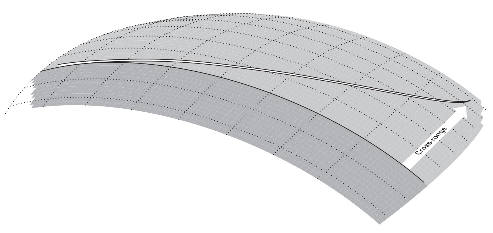
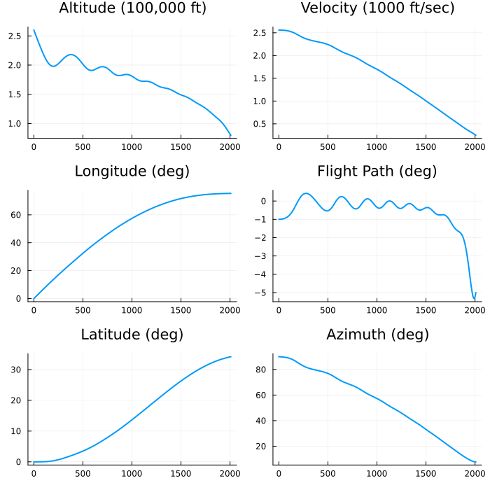
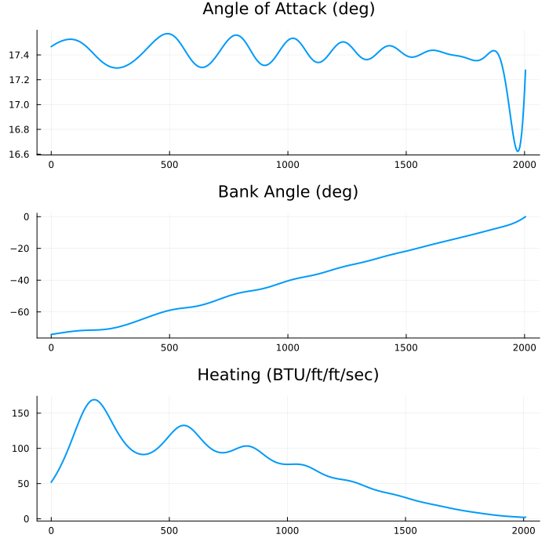
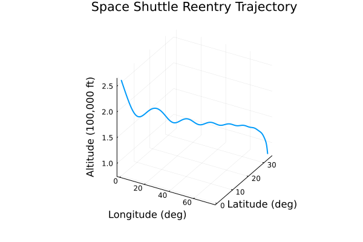

Example: optimal control for a Space Shuttle reentry trajectory
This tutorial was generated using Literate.jl. Download the source as a .jl file.
This tutorial was originally contributed by Henrique Ferrolho.
This tutorial demonstrates how to compute a Space Shuttle reentry trajectory by formulating and solving a nonlinear optimal control problem in JuMP. It is a more complex version of the rocket control tutorial and uses data from (Betts, 2010).
Learning intentions:
- Discretize a six-state continuous-time trajectory model and encode the equations of motion as nonlinear equality constraints in JuMP
- Interpolate between known boundary conditions and use
set_start_valueto give the solver a good initial guess for every variable - Visualise the optimal state and control profiles to interpret the physical behaviour of the reentry trajectory
The JuMP extension InfiniteOpt.jl can also be used to model and solve optimal control problems.
This tutorial is a more-complicated version of the Example: nonlinear optimal control of a rocket tutorial. If you are new to solving nonlinear programs in JuMP, you may want to start there instead.
Required packages
This tutorial uses the following packages:
using JuMPimport Interpolationsimport Ipoptimport PlotsFormulation
The motion of the vehicle is defined by the following set of DAEs:
\[\begin{aligned} \dot{h} & = v \sin \gamma , \\ \dot{\phi} & = \frac{v}{r} \cos \gamma \sin \psi / \cos \theta , \\ \dot{\theta} & = \frac{v}{r} \cos \gamma \cos \psi , \\ \dot{v} & = -\frac{D}{m} - g \sin \gamma , \\ \dot{\gamma} & = \frac{L}{m v} \cos(\beta) + \cos \gamma \left ( \frac{v}{r} - \frac{g}{v} \right ) , \\ \dot{\psi} & = \frac{1}{m v \cos \gamma} L \sin(\beta) + \frac{v}{r \cos \theta} \cos \gamma \sin \psi \sin \theta , \\ q & \le q_U , \\ \end{aligned}\]
where the aerodynamic heating on the vehicle wing leading edge is $q = q_a q_r$ and the dynamic variables are
\[\begin{aligned} h & \quad \text{altitude (ft)}, \qquad & & \gamma \quad \text{flight path angle (rad)}, \\ \phi & \quad \text{longitude (rad)}, \qquad & & \psi \quad \text{azimuth (rad)}, \\ \theta & \quad \text{latitude (rad)}, \qquad & & \alpha \quad \text{angle of attack (rad)}, \\ v & \quad \text{velocity (ft/sec)}, \qquad & & \beta \quad \text{bank angle (rad)}. \end{aligned}\]
The aerodynamic and atmospheric forces on the vehicle are specified by the following quantities (English units):
\[\begin{aligned} D & = \frac{1}{2} c_D S \rho v^2, \qquad & a_0 & = -0.20704, \\ L & = \frac{1}{2} c_L S \rho v^2, \qquad & a_1 & = 0.029244, \\ g & = \mu / r^2, \qquad & \mu & = 0.14076539 \times 10^{17}, \\ r & = R_e + h, \qquad & b_0 & = 0.07854, \\ \rho & = \rho_0 \exp[-h/h_r], \qquad & b_1 & = -0.61592 \times 10^{-2}, \\ \rho_0 & = 0.002378, \qquad & b_2 & = 0.621408 \times 10^{-3}, \\ h_r & = 23800, \qquad & q_r & = 17700 \sqrt{\rho} (0.0001 v)^{3.07}, \\ c_L & = a_0 + a_1 \hat{\alpha}, \qquad & q_a & = c_0 + c_1 \hat{\alpha} + c_2 \hat{\alpha}^2 + c_3 \hat{\alpha}^3, \\ c_D & = b_0 + b_1 \hat{\alpha} + b_2 \hat{\alpha}^2, \qquad & c_0 & = 1.0672181, \\ \hat{\alpha} & = 180 \alpha / \pi, \qquad & c_1 & = -0.19213774 \times 10^{-1}, \\ R_e & = 20902900, \qquad & c_2 & = 0.21286289 \times 10^{-3}, \\ S & = 2690, \qquad & c_3 & = -0.10117249 \times 10^{-5}. \end{aligned}\]
The reentry trajectory begins at an altitude where the aerodynamic forces are quite small with a weight of $w = 203000$ (lb) and mass $m = w / g_0$ (slug), where $g_0 = 32.174$ (ft/sec$^2$). The initial conditions are as follows:
\[\begin{aligned} h & = 260000 \text{ ft}, \qquad & v & = 25600 \text{ ft/sec}, \\ \phi & = 0 \text{ deg}, \qquad & \gamma & = -1 \text{ deg}, \\ \theta & = 0 \text{ deg}, \qquad & \psi & = 90 \text{ deg}. \end{aligned}\]
The final point on the reentry trajectory occurs at the unknown (free) time $t_F$, at the so-called terminal area energy management (TAEM) interface, which is defined by the conditions
\[h = 80000 \text{ ft}, \qquad v = 2500 \text{ ft/sec}, \qquad \gamma = -5 \text{ deg}.\]
As explained in the book, our goal is to maximize the final cross-range, which is equivalent to maximizing the final latitude of the vehicle, that is, $J = \theta(t_F)$.

Approach
We will use a discretized model of time, with a fixed number of discretized points, $n$. The decision variables at each point are going to be the state of the vehicle and the controls commanded to it. In addition, we will also make each time step size $\Delta t$ a decision variable; that way, we can either fix the time step size easily, or allow the solver to fine-tune the duration between each adjacent pair of points. Finally, in order to approximate the derivatives of the problem dynamics, we will use either rectangular or trapezoidal integration.
Do not try to actually land a Space Shuttle using this notebook. There's no mesh refinement going on, which can lead to unrealistic trajectories having position and velocity errors with orders of magnitude $10^4$ ft and $10^2$ ft/sec, respectively.
# Global variablesconst w = 203000.0 # weight (lb)const g₀ = 32.174 # acceleration (ft/sec^2)const m = w / g₀ # mass (slug)# Aerodynamic and atmospheric forces on the vehicleconst ρ₀ = 0.002378const hᵣ = 23800.0const Rₑ = 20902900.0const μ = 0.14076539e17const S = 2690.0const a₀ = -0.20704const a₁ = 0.029244const b₀ = 0.07854const b₁ = -0.61592e-2const b₂ = 0.621408e-3const c₀ = 1.0672181const c₁ = -0.19213774e-1const c₂ = 0.21286289e-3const c₃ = -0.10117249e-5# Initial conditionsconst h_s = 2.6 # altitude (ft) / 1e5const ϕ_s = deg2rad(0) # longitude (rad)const θ_s = deg2rad(0) # latitude (rad)const v_s = 2.56 # velocity (ft/sec) / 1e4const γ_s = deg2rad(-1) # flight path angle (rad)const ψ_s = deg2rad(90) # azimuth (rad)const α_s = deg2rad(0) # angle of attack (rad)const β_s = deg2rad(0) # bank angle (rad)const t_s = 1.00 # time step (sec)# Final conditions, the so-called Terminal Area Energy Management (TAEM)const h_t = 0.8 # altitude (ft) / 1e5const v_t = 0.25 # velocity (ft/sec) / 1e4const γ_t = deg2rad(-5) # flight path angle (rad)# Number of mesh points (knots) to be usedconst n = 503# Integration scheme to be used for the dynamicsconst integration_rule = "rectangular"Picking a good linear solver is extremely important to maximize the performance of nonlinear solvers. For the best results, it is advised to experiment different linear solvers.
For example, the linear solver MA27 is outdated and can be quite slow. MA57 is a much better alternative, especially for highly sparse problems (such as trajectory optimization problems).
# Uncomment the lines below to pass user options to the solveruser_options = (# "mu_strategy" => "monotone",# "linear_solver" => "ma27",)# Create JuMP model, using Ipopt as the solvermodel = Model(optimizer_with_attributes(Ipopt.Optimizer, user_options...))@variables(model, begin 0 ≤ scaled_h[1:n] # altitude (ft) / 1e5 ϕ[1:n] # longitude (rad) deg2rad(-89) ≤ θ[1:n] ≤ deg2rad(89) # latitude (rad) 1e-4 ≤ scaled_v[1:n] # velocity (ft/sec) / 1e4 deg2rad(-89) ≤ γ[1:n] ≤ deg2rad(89) # flight path angle (rad) ψ[1:n] # azimuth (rad) deg2rad(-90) ≤ α[1:n] ≤ deg2rad(90) # angle of attack (rad) deg2rad(-89) ≤ β[1:n] ≤ deg2rad(1) # bank angle (rad) # 3.5 ≤ Δt[1:n] ≤ 4.5 # time step (sec) Δt[1:n] == 4.0 # time step (sec)end);Above you can find two alternatives for the Δt variables.
The first one, 3.5 ≤ Δt[1:n] ≤ 4.5 (currently commented), allows some wiggle room for the solver to adjust the time step size between pairs of mesh points. This is neat because it allows the solver to figure out which parts of the flight require more dense discretization than others. (Remember, the number of discretized points is fixed, and this example does not implement mesh refinement.) However, this makes the problem more complex to solve, and therefore leads to a longer computation time.
The second line, Δt[1:n] == 4.0, fixes the duration of every time step to exactly 4.0 seconds. This allows the problem to be solved faster. However, to do this we need to know beforehand that the close-to-optimal total duration of the flight is ~2009 seconds. Therefore, if we split the total duration in slices of 4.0 seconds, we know that we require n = 503 knots to discretize the whole trajectory.
# Fix initial conditionsfix(scaled_h[1], h_s; force = true)fix(ϕ[1], ϕ_s; force = true)fix(θ[1], θ_s; force = true)fix(scaled_v[1], v_s; force = true)fix(γ[1], γ_s; force = true)fix(ψ[1], ψ_s; force = true)# Fix final conditionsfix(scaled_h[n], h_t; force = true)fix(scaled_v[n], v_t; force = true)fix(γ[n], γ_t; force = true)# Initial guess: linear interpolation between boundary conditionsx_s = [h_s, ϕ_s, θ_s, v_s, γ_s, ψ_s, α_s, β_s, t_s]x_t = [h_t, ϕ_s, θ_s, v_t, γ_t, ψ_s, α_s, β_s, t_s]interp_linear = Interpolations.LinearInterpolation([1, n], [x_s, x_t])initial_guess = mapreduce(transpose, vcat, interp_linear.(1:n))set_start_value.(all_variables(model), vec(initial_guess))# Functions to restore `h` and `v` to their true scale@expression(model, h[j=1:n], scaled_h[j] * 1e5)@expression(model, v[j=1:n], scaled_v[j] * 1e4)# Helper functions@expression(model, c_L[j=1:n], a₀ + a₁ * rad2deg(α[j]))@expression(model, c_D[j=1:n], b₀ + b₁ * rad2deg(α[j]) + b₂ * rad2deg(α[j])^2)@expression(model, ρ[j=1:n], ρ₀ * exp(-h[j] / hᵣ))@expression(model, D[j=1:n], 0.5 * c_D[j] * S * ρ[j] * v[j]^2)@expression(model, L[j=1:n], 0.5 * c_L[j] * S * ρ[j] * v[j]^2)@expression(model, r[j=1:n], Rₑ + h[j])@expression(model, g[j=1:n], μ / r[j]^2)# Motion of the vehicle as a differential-algebraic system of equations (DAEs)@expression(model, δh[j=1:n], v[j] * sin(γ[j]))@expression(model, δϕ[j=1:n], (v[j] / r[j]) * cos(γ[j]) * sin(ψ[j]) / cos(θ[j]))@expression(model, δθ[j=1:n], (v[j] / r[j]) * cos(γ[j]) * cos(ψ[j]))@expression(model, δv[j=1:n], -(D[j] / m) - g[j] * sin(γ[j]))@expression( model, δγ[j=1:n], (L[j] / (m * v[j])) * cos(β[j]) + cos(γ[j]) * ((v[j] / r[j]) - (g[j] / v[j])))@expression( model, δψ[j=1:n], (1 / (m * v[j] * cos(γ[j]))) * L[j] * sin(β[j]) + (v[j] / (r[j] * cos(θ[j]))) * cos(γ[j]) * sin(ψ[j]) * sin(θ[j]))# System dynamicsfor j in 2:n i = j - 1 # index of previous knot if integration_rule == "rectangular" # Rectangular integration @constraint(model, h[j] == h[i] + Δt[i] * δh[i]) @constraint(model, ϕ[j] == ϕ[i] + Δt[i] * δϕ[i]) @constraint(model, θ[j] == θ[i] + Δt[i] * δθ[i]) @constraint(model, v[j] == v[i] + Δt[i] * δv[i]) @constraint(model, γ[j] == γ[i] + Δt[i] * δγ[i]) @constraint(model, ψ[j] == ψ[i] + Δt[i] * δψ[i]) elseif integration_rule == "trapezoidal" # Trapezoidal integration @constraint(model, h[j] == h[i] + 0.5 * Δt[i] * (δh[j] + δh[i])) @constraint(model, ϕ[j] == ϕ[i] + 0.5 * Δt[i] * (δϕ[j] + δϕ[i])) @constraint(model, θ[j] == θ[i] + 0.5 * Δt[i] * (δθ[j] + δθ[i])) @constraint(model, v[j] == v[i] + 0.5 * Δt[i] * (δv[j] + δv[i])) @constraint(model, γ[j] == γ[i] + 0.5 * Δt[i] * (δγ[j] + δγ[i])) @constraint(model, ψ[j] == ψ[i] + 0.5 * Δt[i] * (δψ[j] + δψ[i])) else @error "Unexpected integration rule '$(integration_rule)'" endend# Objective: Maximize cross-range@objective(model, Max, θ[n])set_silent(model) # Hide solver's verbose outputoptimize!(model) # Solve for the control and stateassert_is_solved_and_feasible(model)# Show final cross-range of the solutionprintln( "Final latitude θ = ", round(objective_value(model) |> rad2deg; digits = 2), "°",)Final latitude θ = 34.18°Plotting the results
Let's plot the results to visualize the optimal trajectory:
ts = cumsum([0; value.(Δt)])[1:(end-1)]plt_altitude = Plots.plot( ts, value.(scaled_h); legend = nothing, title = "Altitude (100,000 ft)",)plt_longitude = Plots.plot( ts, rad2deg.(value.(ϕ)); legend = nothing, title = "Longitude (deg)",)plt_latitude = Plots.plot( ts, rad2deg.(value.(θ)); legend = nothing, title = "Latitude (deg)",)plt_velocity = Plots.plot( ts, value.(scaled_v); legend = nothing, title = "Velocity (1000 ft/sec)",)plt_flight_path = Plots.plot( ts, rad2deg.(value.(γ)); legend = nothing, title = "Flight Path (deg)",)plt_azimuth = Plots.plot( ts, rad2deg.(value.(ψ)); legend = nothing, title = "Azimuth (deg)",)Plots.plot( plt_altitude, plt_velocity, plt_longitude, plt_flight_path, plt_latitude, plt_azimuth; layout = Plots.grid(3, 2), linewidth = 2, size = (700, 700),)
function q(h, v, a) ρ(h) = ρ₀ * exp(-h / hᵣ) qᵣ(h, v) = 17700 * √ρ(h) * (0.0001 * v)^3.07 qₐ(a) = c₀ + c₁ * rad2deg(a) + c₂ * rad2deg(a)^2 + c₃ * rad2deg(a)^3 # Aerodynamic heating on the vehicle wing leading edge return qₐ(a) * qᵣ(h, v)endplt_attack_angle = Plots.plot( ts[1:(end-1)], rad2deg.(value.(α)[1:(end-1)]); legend = nothing, title = "Angle of Attack (deg)",)plt_bank_angle = Plots.plot( ts[1:(end-1)], rad2deg.(value.(β)[1:(end-1)]); legend = nothing, title = "Bank Angle (deg)",)plt_heating = Plots.plot( ts, q.(value.(scaled_h) * 1e5, value.(scaled_v) * 1e4, value.(α)); legend = nothing, title = "Heating (BTU/ft/ft/sec)",)Plots.plot( plt_attack_angle, plt_bank_angle, plt_heating; layout = Plots.grid(3, 1), linewidth = 2, size = (700, 700),)
Plots.plot( rad2deg.(value.(ϕ)), rad2deg.(value.(θ)), value.(scaled_h); linewidth = 2, legend = nothing, title = "Space Shuttle Reentry Trajectory", xlabel = "Longitude (deg)", ylabel = "Latitude (deg)", zlabel = "Altitude (100,000 ft)",)